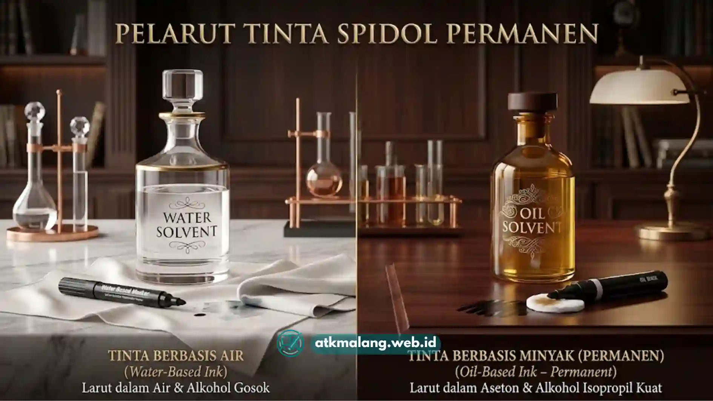

Perbedaan spidol permanen tinta minyak vs air terletak pada jenis pelarut yang digunakan, di mana tinta minyak lebih tahan air dan tahan lama sementara tinta air memiliki aroma lebih ringan dan cenderung lebih ramah lingkungan.
Keduanya termasuk Alat Tulis Kantor yang sering dipakai untuk memberi label, menulis, hingga kerajinan tangan. Berikut perbandingan lengkapnya agar Anda tidak salah pilih.
- Spidol permanen tinta minyak menggunakan pelarut seperti xylene atau toluena yang membuat tintanya sangat tahan air.
- Spidol permanen tinta air menggunakan pelarut alkohol yang lebih ringan dan cepat menguap.
- Tinta minyak umumnya lebih cocok untuk permukaan non-pori seperti logam, kaca, dan plastik licin.
- Tinta air cenderung memiliki aroma lebih ringan dan lebih nyaman digunakan di ruangan tertutup.
- Pilihan antara keduanya sebaiknya disesuaikan dengan jenis permukaan dan kebutuhan daya tahan.
Daftar Isi
- Apa Perbedaan Bahan Pelarut Spidol Permanen Tinta Minyak dan Tinta Air?
- Mana yang Lebih Tahan Lama, Tinta Minyak atau Tinta Air?
- Apakah Spidol Permanen Tinta Air Benar-Benar Permanen?
- Permukaan Apa yang Paling Cocok untuk Masing-Masing Jenis Tinta?
- Bagaimana Perbedaan Aroma dan Keamanan Penggunaan Keduanya?
- FAQ Spidol Permanen Tinta Minyak vs Tinta Air
Apa Perbedaan Bahan Pelarut Spidol Permanen Tinta Minyak dan Tinta Air?
Perbedaan utama antara spidol permanen tinta minyak dan tinta air terletak pada jenis pelarut yang digunakan untuk melarutkan pigmen warna di dalam tintanya.
Spidol permanen tinta minyak umumnya menggunakan pelarut berbasis hidrokarbon seperti xylene atau toluena.
Pelarut jenis ini membuat tinta cepat kering dan menempel kuat pada berbagai permukaan, termasuk permukaan licin seperti logam dan kaca.
Di sisi lain, spidol permanen tinta air menggunakan pelarut berbasis alkohol yang cenderung lebih ringan dan cepat menguap, sehingga aromanya tidak setajam tinta berbasis minyak.
Perbandingan singkat tinta minyak dan tinta air
| Aspek | Tinta Minyak | Tinta Air |
|---|---|---|
| Pelarut | Hidrokarbon, seperti xylene atau toluena | Berbasis alkohol, lebih ringan dan cepat menguap |
| Daya tahan | Sangat tahan air, sinar matahari, dan gesekan | Tahan air setelah kering, sedikit di bawah tinta minyak |
| Aroma | Lebih tajam | Lebih ringan |
| Permukaan cocok | Logam, kaca, plastik licin | Kertas, kardus, kayu |
| Ruangan tertutup | Batasi pemakaian tanpa ventilasi | Lebih nyaman untuk pemakaian lama |
Mana yang Lebih Tahan Lama, Tinta Minyak atau Tinta Air?
Secara umum, spidol permanen tinta minyak cenderung lebih tahan lama dan tahan air dibanding tinta air, terutama saat digunakan pada permukaan yang sering terpapar kelembapan atau gesekan.
Ketahanan tinta minyak terhadap air dan sinar matahari membuatnya lebih sering dipilih untuk penggunaan luar ruangan, seperti memberi label pada kemasan yang disimpan di area lembap atau terkena cuaca.
Sementara itu, tinta air tetap tergolong permanen pada banyak permukaan, tetapi dapat sedikit lebih rentan memudar bila terus-menerus terkena gesekan atau sinar matahari dalam jangka panjang.
Apakah Spidol Permanen Tinta Air Benar-Benar Permanen?
Spidol permanen tinta air tetap tergolong permanen karena pigmennya tidak larut dengan air biasa setelah kering, meskipun daya tahannya terhadap gesekan dan cuaca ekstrem umumnya sedikit di bawah tinta berbasis minyak.
Tinta air tetap cocok digunakan untuk kebutuhan sehari-hari seperti menulis label, mencatat, atau kerajinan tangan yang tidak memerlukan ketahanan ekstrem terhadap cuaca.
Permukaan Apa yang Paling Cocok untuk Masing-Masing Jenis Tinta?
Spidol permanen tinta minyak lebih cocok digunakan pada permukaan non-pori seperti logam, kaca, dan plastik licin, sementara tinta air cukup memadai untuk permukaan kertas, kardus, dan kain.
- Tinta minyak: cocok untuk label kemasan logam, pipa, kabel, dan permukaan plastik yang licin.
- Tinta air: cocok untuk kertas, kardus, kayu, dan kebutuhan menulis atau menggambar umum.
- Kedua jenis: dapat digunakan pada kain, namun hasil dan daya tahan warna dapat bervariasi tergantung jenis bahan kain.
Bagaimana Perbedaan Aroma dan Keamanan Penggunaan Keduanya?
Spidol permanen tinta minyak umumnya memiliki aroma yang lebih tajam karena kandungan pelarut hidrokarbonnya, sementara tinta air lebih ringan sehingga lebih nyaman digunakan dalam ruangan tertutup dalam waktu lama.

Jenis pelarut menentukan aroma, daya rekat, dan ketahanan tinta spidol permanen.Spidol tinta air menjadi pilihan yang lebih nyaman untuk aktivitas menulis dalam durasi panjang, seperti di ruang kelas atau ruang kerja tertutup.
Memilih antara spidol permanen tinta minyak dan tinta air sebaiknya disesuaikan dengan kebutuhan: tinta minyak lebih unggul untuk permukaan non-pori dan kondisi ekstrem, sementara tinta air lebih nyaman digunakan sehari-hari karena aromanya yang lebih ringan.
Untuk papan tulis, gunakan spidol khusus seperti spidol boardmarker yang dirancang mudah dihapus, bukan spidol permanen.
Lengkapi persediaan Alat Tulis Kantor Anda melalui layanan pengadaan ATK kantor resmi di Malang, atau lihat Paket Pelajar untuk kebutuhan sekolah.